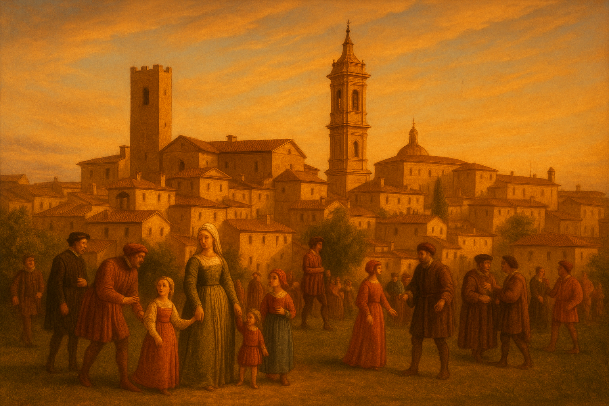

Il Rinascimento Pievese

Il Rinascimento a Città della Pieve rappresenta un periodo cruciale di sviluppo artistico, culturale e sociale per la cittadina. Situata in una posizione strategica tra l’Umbria e la Toscana, la città visse un significativo fermento durante il Quattrocento e il Cinquecento, in gran parte grazie alla figura del Pietro Perugino (Pietro Vannucci), uno dei più illustri pittori del Rinascimento italiano, nato proprio a Città della Pieve nel 1446. Il suo impatto non solo artistico ma anche culturale definì gran parte dell'epoca, e la città ne conservò tracce tangibili nelle opere d'arte, nella tradizione religiosa e nell'urbanistica del tempo.
Durante questo periodo, Città della Pieve, che inizialmente si era sviluppata come un piccolo centro fortificato nel Medioevo, divenne un'importante cittadina di confine per l'arte, la religione e la cultura. Il Rinascimento portò nuove influenze artistiche, architettoniche e politiche, segnando una transizione significativa da una società medievale a una più moderna, ispirata alla riscoperta dei valori classici e della centralità dell'uomo.
Inoltre, Città della Pieve divenne un centro di attività culturale, in gran parte grazie all’opera di Pietro Perugino, ma anche per la crescita di una religiosità attiva, che trovava nelle confraternite e nelle scuole religiose un punto di riferimento. La città fu teatro di importanti cambiamenti economici e sociali, che rispecchiavano quelli in atto nel resto d'Italia, con l'incremento del commercio e l'espansione di nuove forme di produzione artigianale.
In questa cornice, il Rinascimento a Città della Pieve non si limitò alla sola arte, ma fu una vera e propria fucina di innovazione, un periodo di crescita e di apertura che influenzò il destino della cittadina per i secoli a venire.
Personaggi importanti del Rinascimento Pievese
Ecco una panoramica dei personaggi più importanti di Città della Pieve durante questo periodo:
- Pietro Perugino (Pietro Vannucci): Pietro Perugino, nato a Città della Pieve nel 1446, è senza dubbio il personaggio più famoso e significativo del Rinascimento pievese. Perugino è stato uno dei più grandi pittori dell'Italia rinascimentale, noto per il suo stile raffinato e l'uso della prospettiva. La sua arte ha influenzato in modo duraturo l'evoluzione della pittura, sia in Umbria che in tutta Italia. Opere a Città della Pieve:
- Polittico di San Pietro: Realizzato per la Chiesa di San Pietro, è uno degli esempi più celebri della sua arte. L'opera mostra il perfezionamento della tecnica rinascimentale con l'uso della prospettiva e la dolcezza dei colori.
- Affreschi nell'Oratorio dei Bianchi: Questo ciclo di affreschi è tra le prime opere documentate del giovane Perugino, che si distinse per l'armonia e l'eleganza delle sue composizioni. L'Oratorio è una delle testimonianze artistiche più importanti della città.
La sua fama si diffuse a livello europeo, e lavorò anche per importanti commissioni in Roma (come la Cappella Sistina), ma il suo legame con Città della Pieve è indissolubile, e la città celebra la sua figura con il Museo Perugino che conserva numerose opere e ricordi della sua vita.
- Giovanni Della Corgna: La famiglia Della Corgna fu una delle dinastie più influenti a Città della Pieve durante il Rinascimento. Giovanni Della Corgna (fine XV – inizio XVI secolo) fu un importante signore locale, membro di una famiglia che ricoprì ruoli di governo e di comando per un lungo periodo. Giovanni Della Corgna contribuì in modo determinante alla costruzione di palazzi nobiliari, come il Palazzo Della Corgna, che rappresenta una delle testimonianze più imponenti dell'architettura rinascimentale a Città della Pieve. La sua figura è legata anche alla politica cittadina, poiché la famiglia Della Corgna ebbe un forte legame con lo Stato Pontificio e influenzò le vicende politiche locali. Il Palazzo Della Corgna è tuttora un simbolo della potenza politica ed economica della famiglia.
- Ascanio Della Corgna: Ascanio Della Corgna fu un altro membro di spicco della famiglia Della Corgna e una figura importante nella storia politica e culturale di Città della Pieve. Fu il governatore di Città della Pieve e rivestì un ruolo chiave durante il periodo della Rinascita della città, contribuendo alla ricostruzione e all’abbellimento di molte strutture pubbliche e private. È noto per il suo mecenatismo, supportando artisti, architetti e intellettuali locali. Durante il suo governo, Città della Pieve visse una fioritura culturale, anche grazie agli investimenti in progetti architettonici e nella promozione di opere d'arte. La sua influenza fu fondamentale per il consolidamento della città sotto il controllo papale e per la costruzione di alcuni dei principali edifici civili e religiosi.
- Francesco di Giorgio Martini: Francesco di Giorgio Martini (1430-1501), architetto e ingegnere militare, è un altro personaggio che ha avuto una certa influenza sulla Città della Pieve. Sebbene non fosse originario della città, è noto che Francesco di Giorgio Martini progettò parte della Rocca di Città della Pieve, una fortezza che simboleggiava il controllo del Stato Pontificio nella zona e che fu successivamente modificata e ampliata. Martini fu anche uno degli architetti di corte più importanti del Duché di Milano e il suo lavoro ha influenzato molti aspetti dell’architettura rinascimentale in Italia.La Rocca, che oggi è ancora visibile, fu uno degli elementi strategici di difesa e di consolidamento del potere papale sulla città.
- Vincenzo Della Corgna: Vincenzo Della Corgna, come il padre Giovanni, ebbe un ruolo nella politica locale e nello sviluppo della città. Fu un nobile e militare che cercò di modernizzare e rinforzare la città in un'epoca in cui il potere papale cercava di consolidare il proprio controllo su Città della Pieve. La sua figura si inserisce in un periodo di grande instabilità politica e conflitti tra le famiglie nobili e le forze esterne che cercavano di prevalere sulla città.Vincenzo Della Corgna fu anche un protettore di artisti e architetti, contribuendo indirettamente alla fioritura culturale della città.
- Salvio Savini:fu un pittore toscano attivo nel XVI secolo, legato alla corrente manierista. La sua importanza a Città della Pieve è strettamente connessa alla decorazione del prestigioso Palazzo della Corgna, residenza nobiliare voluta da Ascanio della Corgna, governatore e mecenate della città. Savini fu incaricato di affrescare le sale del palazzo con temi mitologici e allegorici, conferendo agli ambienti un tono raffinato e colto, tipico delle dimore rinascimentali di alto livello. Le sue opere resero il palazzo non solo un simbolo di potere, ma anche un importante punto di riferimento artistico per la città e il territorio circostante. Grazie a lui, Città della Pieve si arricchì di decorazioni artistiche che testimoniavano il gusto e le ambizioni culturali dell'epoca, proiettandola nella piena atmosfera del Rinascimento.
- Galeazzo Alessi:fu uno dei più importanti architetti del Rinascimento italiano, noto per il suo stile elegante e armonioso, capace di fondere la monumentalità con la raffinatezza. La sua influenza a Città della Pieve è legata in particolare alla progettazione del Palazzo della Corgna, commissionato da Ascanio della Corgna, potente figura politica e militare della città. Alessi, già celebre per opere prestigiose in Perugia e Genova, contribuì a definire l'aspetto rinascimentale del palazzo e, di riflesso, della stessa Città della Pieve. La sua visione architettonica trasformò il palazzo in un vero e proprio simbolo del potere e della cultura del tempo: elegante nelle proporzioni, dotato di logge, cortili e decorazioni che riflettevano il prestigio del committente. Grazie all’intervento di Alessi, Città della Pieve si arricchì di un’opera architettonica che la pose in dialogo con le grandi città d’arte dell’Italia centrale, segnando il passaggio da borgo medievale a centro rinascimentale aperto alle influenze culturali del suo tempo.
- Il Pomarancio (Cristoforo Roncalli): Tra i personaggi significativi della cultura artistica di Città della Pieve spicca anche Cristoforo Roncalli, noto come Il Pomarancio
(circa 1552–1626). Pittore tra il tardo Rinascimento e l’inizio del Barocco, Il Pomarancio ha lasciato un segno importante nella città umbra, contribuendo a mantenere viva la tradizione artistica dopo l’epoca di grandi maestri come il Perugino. Il suo stile, caratterizzato da forme più dinamiche e colori intensi, rifletteva le nuove tendenze della Controriforma e del manierismo. Le opere realizzate a Città della Pieve, visibili in alcune chiese e spazi sacri, arricchiscono ancora oggi il patrimonio artistico locale e rappresentano un importante collegamento tra la classicità rinascimentale e le espressioni artistiche più emotive e teatrali del Seicento. La presenza del Pomarancio nella storia della città conferma il ruolo di Città della Pieve come luogo aperto alle innovazioni e crocevia di artisti, mantenendo vivo il suo prestigio culturale anche nelle fasi successive al Rinascimento.
- Altri Intellettuali e Mecenati: Durante il Rinascimento, diversi intellettuali e mecenati della città contribuirono alla vita culturale. Molti membri delle famiglie nobili pievesi, come i Della Corgna, avevano legami con le corti di Roma, Siena e Firenze, che consentirono l’influenza di idee e opere rinascimentali. Questo flusso culturale arricchì non solo la vita religiosa ma anche le attività artistiche e il pensiero filosofico della cittadina.A partire dal XVI secolo, la città vide l’arrivo di diversi poeti, filosofi e teologi che si formarono nella scuola religiosa di Città della Pieve, la quale fu un importante centro per l’insegnamento della teologia e delle scienze.
In sintesi, il Rinascimento a Città della Pieve fu un periodo di grandi cambiamenti e di sviluppo culturale, con personaggi di grande importanza che segnarono la storia della città, tra cui il geniale Pietro Perugino, che lasciò un’eredità indelebile nel panorama artistico, e le famiglie nobili come i Della Corgna, che influenzarono la politica, l’architettura e l'economia del tempo.
Architettura Rinascimentale
Durante il Rinascimento, Città della Pieve visse un periodo di grande fermento architettonico, con la costruzione e la ristrutturazione di edifici pubblici e privati che riflettevano le nuove idee estetiche e urbanistiche tipiche dell'epoca. Il Rinascimento portò una vera e propria rivoluzione nell'architettura, con l'adozione di principi ispirati all'antichità classica, come la simmetria, la proporzione e l'uso della prospettiva. Anche Città della Pieve si inserì in questo movimento, anche se in scala ridotta rispetto alle grandi città italiane come Firenze e Roma. Ecco gli aspetti principali dell'architettura rinascimentale che caratterizzano la cittadina:
- Palazzi Nobiliari e Residenze:Il Rinascimento a Città della Pieve è strettamente legato alla figura della famiglia Della Corgna, che, come molte altre famiglie nobili italiane, volle dimostrare la propria ricchezza e potere attraverso la costruzione di palazzi signorili. Il Palazzo della Corgna è senza dubbio l’esempio più significativo di architettura rinascimentale a Città della Pieve. Questo palazzo, costruito tra il 1560 e il 1570, fu la residenza della famiglia Della Corgna, una delle più potenti dinastie locali. Il palazzo mostra chiaramente l'influenza delle linee classiche rinascimentali, con un impianto simmetrico, archi a tutto sesto e finestre con cornici in pietra. L'edificio ha un aspetto solido e imponente, che testimonia la volontà della famiglia di proiettare un’immagine di potere e di ricchezza. All'interno, il palazzo ospita affreschi che celebrano le gesta della famiglia, con opere che rispecchiano le tendenze artistiche del tempo. Non solo una residenza, il Palazzo della Corgna serviva anche da centro amministrativo e simbolo della potenza politica della famiglia.
- Chiese e Edifici Religiosi: L'architettura religiosa rinascimentale a Città della Pieve si riflette nell'adozione di forme più sobrie e proporzionate rispetto agli stili medievali precedenti, mantenendo però la centralità della funzione liturgica. Le chiese rimasero il cuore della vita sociale e religiosa della città.
- Cattedrale dei Santi Gervasio e Protasio: è un altro esempio di architettura rinascimentale a Città della Pieve. Sebbene la struttura originaria della cattedrale risalga all'epoca medievale, la chiesa fu rinnovata durante il Rinascimento, con l'introduzione di elementi rinascimentali come la proporzione e l'uso di materiali nobili, come il travertino, che impreziosirono la facciata. La pianta a croce latina, tipica delle chiese medievali, fu mantenuta, ma le linee e le proporzioni degli interni furono rielaborate in stile rinascimentale.
Anche l’interno della cattedrale fu arricchito da affreschi di artisti rinascimentali, che contribuirono a donarle un aspetto maestoso, pur nel rispetto della tradizione religiosa.
- Chiesa di San Francesco: è un altro esempio di architettura religiosa rinascimentale. Risale al XIII secolo, ma subì modifiche significative durante il Rinascimento, con l’introduzione di elementi gotici e rinascimentali. In particolare, l'adozione di linee più semplici ed eleganti, l'uso di archi e colonne, riflette le tendenze dell'epoca, che vedevano nella proporzione e nell’equilibrio i valori fondamentali della bellezza architettonica.
- Urbanistica e Spazi Pubblici: Il Rinascimento a Città della Pieve vide anche modifiche significative al tessuto urbano, sebbene in scala minore rispetto alle grandi città. La ristrutturazione delle piazze, l'allineamento delle strade e l’organizzazione degli spazi pubblici seguirono i principi di ordine e simmetria, che erano alla base delle teorie rinascimentali. La Piazza del Popolo di Città della Pieve, che è la piazza principale, è un esempio di come il Rinascimento influenzò l’urbanistica della città. Sebbene la sua configurazione risalga a periodi precedenti, la piazza fu riorganizzata durante il Rinascimento, con la costruzione di palazzi che ne definiscono lo spazio. La piazza è ancora oggi il cuore della città e mostra come l’architettura rinascimentale cercava di promuovere l’armonia tra l’uomo e lo spazio circostante, creando luoghi che favorivano la socialità e la riflessione.
- Uso del Cotto e dei Materiali Locali: Un aspetto distintivo dell'architettura rinascimentale a Città della Pieve è l’uso del cotto locale, che conferisce agli edifici un carattere unico. La pietra arenaria e il cotto furono utilizzati abbondantemente sia per la costruzione di palazzi che per chiese e fortificazioni. Questo non solo conferiva agli edifici un aspetto rustico ma anche un senso di permanenza e di solidità, in linea con il pensiero rinascimentale che celebrava la maestosità e la forza delle strutture.
- La Rocca: La Rocca di Città della Pieve è una delle fortificazioni più significative del Rinascimento. Sebbene la struttura originaria risalga a epoche precedenti, durante il Rinascimento la Rocca fu trasformata e ampliata, incorporando caratteristiche rinascimentali come torri cilindriche e ampi cortili, funzionali sia alla difesa che alla residenza della nobiltà. La Rocca rimase un simbolo del potere papale e della difesa delle terre sottoposte al controllo del Vaticano.
In conclusione l'architettura rinascimentale a Città della Pieve è caratterizzata dalla ricerca di equilibrio, simmetria e proporzione, principi che vennero adottati tanto negli edifici religiosi quanto in quelli civili. Le famiglie nobili, come i Della Corgna, rivestirono un ruolo fondamentale nel dare forma alla città, costruendo palazzi e strutture che rispecchiavano le tendenze architettoniche rinascimentali, pur mantenendo una forte connessione con la tradizione locale. Anche se Città della Pieve non divenne una grande capitale rinascimentale, come Firenze o Roma, il suo contributo all'architettura del periodo fu significativo, e molti degli edifici costruiti o rinnovati durante il Rinascimento continuano a essere tra le testimonianze più importanti della città oggi.
Sviluppi culturali e religiosi
Nel Rinascimento, Città della Pieve, pur essendo un centro relativamente piccolo rispetto ad altre città italiane, divenne un polo culturale e religioso di grande importanza. Le innovazioni artistiche, scientifiche e filosofiche del periodo si mescolarono con la tradizione religiosa della città, creando un ambiente unico di sviluppo culturale. Vediamo più nel dettaglio gli sviluppi culturali e religiosi a Città della Pieve durante il Rinascimento:
- L'importanza della Religione
Nel Rinascimento, la religione rimase il perno della vita quotidiana e della cultura, anche nelle città più piccole come Città della Pieve. Sebbene l'umanesimo e la riscoperta delle arti classiche abbiano iniziato a influenzare la cultura, la Chiesa e le istituzioni religiose continuavano a essere fondamentali nel determinare il panorama culturale e sociale.
- La Cattedrale dei Santi Gervasio e Protasio:
dedicata ai Santi Gervasio e Protasio, è una delle principali testimonianze della centralità della religione nella vita della città. Il Rinascimento influenzò la struttura della chiesa, che venne ampliata e rinnovata con elementi architettonici rinascimentali. L’interno della cattedrale, con la sua imponente navata e l’altare maggiore, continuava a servire come luogo di preghiera e riflessione spirituale per la comunità.
- Confraternite e Vite Religiose:
Le confraternite laicali ebbero un ruolo centrale nella vita religiosa di Città della Pieve. Durante il Rinascimento, le confraternite non solo svolgevano funzioni liturgiche e religiose, ma si occupavano anche di opere di carità come l’assistenza ai malati, ai poveri e ai condannati. La più importante tra queste fu la Confraternita dei Bianchi (o Disciplinati), che era dedita alla penitenza e all'assistenza spirituale. L'oratorio che essa possedeva, noto come Oratorio dei Bianchi, è uno degli esempi più significativi di come la religiosità e la cultura si intrecciassero in questo periodo.
- L'Accademia di San Luca e l'Umanesimo:
Sebbene Città della Pieve non fosse un centro principale dell'umanesimo, vi si sviluppò comunque una fiorente cultura umanista che ebbe un impatto significativo sulla formazione intellettuale e sulle attività religiose. Nel Quattrocento la città vide la nascita di una scuola di teologia che attirò studiosi e intellettuali da tutta l’Umbria. Alcuni di questi, influenzati dalle idee umaniste, contribuirono a diffondere il pensiero critico e la riscoperta dei testi classici. La presenza di umanisti a Città della Pieve, come Francesco Trento, uno dei primi promotori dell'umanesimo nella regione, favorì il nascere di discussioni filosofiche, scientifiche e artistiche che cercavano di integrare la spiritualità cristiana con i valori classici. Anche l’Accademia di San Luca, che fu fondata nel periodo rinascimentale, giocò un ruolo chiave nell'introduzione dei nuovi concetti dell'arte e della scienza, oltre a promuovere il pensiero filosofico ed estetico di stampo umanista. In un contesto come quello di Città della Pieve, dove le tradizioni religiose e culturali erano fortemente intrecciate, l’umanesimo si presentò come una riflessione su come conciliare l’antico e il cristiano, sviluppando una visione più razionale e razionale della spiritualità.
- L'Influenza di Pietro Perugino:
La figura di Pietro Perugino è il cuore di molti sviluppi culturali e religiosi a Città della Pieve. Il famoso pittore rinascimentale, che nacque proprio in questa città, rappresenta un elemento di unione tra la religiosità e l’arte del tempo. Le sue opere, che si sviluppano principalmente nel campo della pittura sacra, hanno profondamente influenzato non solo Città della Pieve, ma anche l’intera regione umbra. Perugino coniugava la religiosità cristiana con le nuove scoperte artistiche del Rinascimento, come l'uso della prospettiva lineare, la rappresentazione armoniosa delle figure umane e la composizione equilibrata delle scene. A Città della Pieve, l'influenza del Perugino non si limitò alle opere che realizzò per la chiesa locale, ma anche al suo mecenatismo. Infatti, i suoi legami con la Chiesa e con le istituzioni locali gli permisero di influenzare la decorazione di numerosi edifici religiosi, come l’Oratorio dei Bianchi, dove si trovano i suoi primi affreschi e dipinti. Il suo stile contribuì al dialogo tra le esigenze devozionali della Chiesa e le innovazioni stilistiche del Rinascimento.
- La Tradizione della Scuola Teologica:
Il Rinascimento a Città della Pieve non fu solo un periodo di sviluppo artistico e culturale, ma anche un periodo di crescita per la scuola teologica della città. Sebbene non ci siano prove documentate di una scuola rinascimentale di grande portata, l’influenza delle idee religiose e delle teorie filosofiche umaniste era evidente nel modo in cui le chiese locali favorivano l’insegnamento religioso. Le scuole religiose si trovavano sotto il controllo della Chiesa locale e contribuivano alla formazione di sacerdoti, teologi e filosofi che avrebbero in seguito diffuso le idee umanistiche e teologiche in altre parti d'Italia. Città della Pieve, pur non essendo una capitale culturale come Firenze o Roma, divenne quindi una città in cui pensatori e teologi si confrontavano sulle questioni dottrinali.
- Feste Religiose e Processioni:
Le feste religiose e le processioni erano eventi significativi nella vita della città. Ogni anno, Città della Pieve celebrava le principali festività cristiane come il Natale, la Pasqua, la festa di San Gervasio e San Protasio (i santi patroni della città) e altre ricorrenze liturgiche. Durante queste festività, la città era inondata di fedeli, e le chiese e le piazze si animavano di celebrazioni religiose che segnavano il ciclo dell'anno liturgico. In particolare, le processioni e le celebrazioni liturgiche erano accompagnate da rappresentazioni teatrali sacre e da momenti di preghiera collettiva, che coinvolgevano tutta la comunità, dai contadini ai nobili. L’importanza di questi eventi non era solo spirituale, ma anche sociale e culturale, fungendo da momenti di aggregazione collettiva per la popolazione.
- Istituzioni Educative e Formazione:
Le scuole religiose di Città della Pieve durante il Rinascimento svolgevano un ruolo importante nella formazione dei giovani. Queste scuole erano principalmente dedicate alla teologia, ma anche all’insegnamento delle lettere e della filosofia, seguendo le linee guida delle università pontificie. I giovani provenienti da famiglie nobili o da famiglie con legami religiosi si recavano a Città della Pieve per ricevere un’istruzione basata su principi cristiani.
Il Rinascimento a Città della Pieve fu un periodo di grandi trasformazioni culturali e religiose. L'arte, la teologia e l'umanesimo si intrecciarono, arricchendo la città di un patrimonio artistico e intellettuale che ancora oggi è visibile nelle sue chiese, nelle opere di Perugino e nei luoghi di culto. Il rinnovamento culturale, pur radicato nelle tradizioni religiose, aprì anche alla riflessione filosofica e all'incontro con le nuove idee che segnarono il Rinascimento. Città della Pieve fu una cittadina di confine che visse il Rinascimento con una sua specificità, intrecciando l’eredità medievale con le influenze rinnovate dell'epoca.
Economia e società nel Cinquecento
Nel Cinquecento, Città della Pieve, come molte altre città italiane, visse un periodo di significativi cambiamenti economici e sociali. Sebbene la città fosse di dimensioni relativamente contenute rispetto ai grandi centri del Rinascimento come Firenze e Roma, il suo sviluppo fu influenzato dal contesto politico e culturale dell'epoca, soprattutto dalla centralità della Chiesa e dal predominio dello Stato Pontificio. La sua economia si basava su agricoltura, artigianato e commercio, mentre la sua società era caratterizzata da una netta divisione tra le classi nobili e i ceti popolari.
- Agricoltura e Produzione Rurale:
L’agricoltura rappresentava la base dell’economia di Città della Pieve nel Cinquecento, e come molte città umbre, la vita rurale giocava un ruolo cruciale nel sostentamento della popolazione. Principali coltivazioni:
- Cereali: Il grano, l'orzo, e il farro erano coltivati principalmente per il consumo locale e il commercio, e servivano a garantire l'approvvigionamento alimentare.
- Vite: La viticoltura era molto importante, come testimoniano le numerose coltivazioni di uva nella Val di Chiana e nella Val d'Orcia. Il vino era una merce di scambio e contribuiva all’economia locale, venendo consumato anche come prodotto da esportazione.
- Olivo: Città della Pieve, come molte città della Toscana e dell’Umbria, produceva olio d'oliva di qualità. L'olio veniva utilizzato sia per l’alimentazione che per scopi religiosi (come l'uso nelle chiese per le candele).
- Bestiame: l’allevamento di bestie da soma, ovini per la produzione di lana e carne, e suini per il consumo alimentare era altrettanto diffuso. I muli e buoi venivano utilizzati per il lavoro nei campi e nel trasporto di merci.
- Artigianato e Lavorazione:
L'artigianato era un’altra componente fondamentale dell’economia pievese durante il Cinquecento. Le botteghe artigiane erano essenziali per il sostentamento della comunità e per la produzione di beni di consumo e di prestigio. I principali settori artigianali comprendevano:
- Lavorazione del cotto e dei laterizi:
Città della Pieve era nota per la produzione di mattoni, tegole e altri materiali in terracotta. La fornace era una delle attività più fiorenti: il cotto locale veniva utilizzato per la costruzione di palazzi, case e chiese, ma anche per la realizzazione di vasi e oggetti decorativi.
- Lavorazione del ferro e della seta:
Nel Cinquecento, i fabbri e i maniscalchi pievesi lavoravano il ferro per produrre utensili agricoli, armi e attrezzi per il quotidiano. C'era anche una piccola produzione di seta, che veniva lavorata in tessuti pregiati, ma questa industria era di dimensioni più ridotte rispetto a quella di altre zone come Lucca o Firenze.
- Arte della ceramica e del cuoio:
La produzione di ceramiche e oggetti in cuoio era molto diffusa. Le ceramiche venivano usate per la produzione di vasi, piatti e stoviglie, mentre il cuoio era utilizzato per creare scarpe, cinture, borse e altri articoli di uso quotidiano.
- Commercio e Artigianato:
Il commercio di Città della Pieve durante il Cinquecento non era a livello delle grandi città, ma la sua posizione geografica strategica tra l’Umbria, la Toscana e il Lazio la rendeva un crocevia di traffici e scambi.
- I mercati:
Città della Pieve ospitava regolarmente mercati che attiravano commercianti locali e regionali. La piazza principale della città, Piazza del Popolo, diveniva il punto di riferimento per le fiere settimanali e annuali. Qui si vendevano prodotti agricoli come grano, vino, olio, e prodotti artigianali, ma anche beni di lusso provenienti da Firenze e Roma, come tessuti pregiati, gioielli e prodotti di alta moda.
- Esportazioni e scambi:
L’economia cittadina aveva un carattere rurale e locale, ma la sua vicinanza a Perugia, Siena, e Roma la rendeva parte di un circuito di scambi commerciali che includevano spezie, lana, cotone e ceramiche, ma anche prodotti locali come il zafferano e il vino.
- La Società Pievese nel Cinquecento:
La società di Città della Pieve durante il Cinquecento era divisa in classi, con una netta separazione tra nobili e popolani, che si rifletteva sia nelle strutture sociali che nelle dinamiche politiche.
- La nobiltà e le famiglie di potere:
Le famiglie nobili, come i Della Corgna, Bandini, e Ciocchi, erano le protagoniste del panorama politico e sociale. Queste famiglie esercitavano un potere politico, economico e culturale, controllando ampie proprietà terriere, risorse e occupando posizioni di rilievo nell’amministrazione comunale e nella corte papale. I nobili vivevano in palazzi signorili e in ville, e spesso erano mecenati di artisti e letterati. La famiglia Della Corgna, in particolare, influenzò molto la vita culturale e amministrativa della città, come dimostra il Palazzo della Corgna, che divenne uno dei centri nevralgici del potere locale.
- Le classi popolari:
La classe popolare era composta principalmente da contadini, artigiani e commercianti. I contadini vivevano nelle campagne circostanti e lavoravano le terre per conto delle famiglie nobili o della Chiesa, in un sistema di mezzadria o affitto. Gli artigiani, che lavoravano in botteghe, creavano prodotti per il consumo locale, ma anche per l’esportazione, come ceramiche, vesti, scarpe e utensili. Il ceto mercantile era più limitato, ma le botteghe e i negozi erano frequentati da persone che si occupavano di scambi commerciali e importazione di beni dalle città vicine, in particolare da Firenze, Perugia e Siena.
- La Chiesa e la sua influenza:
La Chiesa aveva un ruolo centrale nella società pievese. La Cattedrale dei Santi Gervasio e Protasio e le altre chiese della città non erano solo luoghi di culto, ma anche centri di formazione religiosa e sociale. Molte famiglie nobili facevano parte di confraternite religiose che organizzavano opere di carità, ma anche eventi sociali e culturali.
La Chiesa esercitava anche un enorme potere economico attraverso il patrimonio fondiario e le donazioni dei fedeli, con un’influenza che si estendeva a molteplici aspetti della vita cittadina, dalla giustizia alla moralità pubblica.
- Le Relazioni con lo Stato Pontificio:
Nel Cinquecento, Città della Pieve era saldamente sotto il controllo del Papa e faceva parte dello Stato Pontificio. Questo dominio influenzò la politica e l’economia della città. La presenza papale assicurò la stabilità politica, ma impose anche tasse e dazi sul commercio, che gravavano sulla popolazione. Tuttavia, lo Stato Pontificio aveva anche un lato positivo: assicurava la protezione dalle invasioni straniere e contribuiva al mecenatismo che favoriva lo sviluppo delle arti e della cultura. La Chiesa era anche una grande proprietaria terriera, che esercitava una grande influenza economica sulla comunità locale.
Nel Cinquecento, Città della Pieve fu una città agricola e artigianale che prosperò grazie alla sua posizione strategica e alla dominazione papale. Sebbene non fosse una capitale commerciale o culturale, la città godeva di una certa prosperità grazie al commercio agricolo e all'artigianato. La sua società era divisa tra una nobiltà privilegiata che controllava la politica e l'economia, e una classe popolare di contadini, artigiani e mercanti. La Chiesa esercitava un forte controllo su tutti gli aspetti della vita cittadina, influenzando la vita sociale, economica e culturale.
Politica e amministrazione locale nel periodo
Nel Rinascimento, Città della Pieve, pur essendo un centro relativamente piccolo rispetto ad altre città italiane, divenne un polo culturale e religioso di grande importanza. Le innovazioni artistiche, scientifiche e filosofiche del periodo si mescolarono con la tradizione religiosa della città, creando un ambiente unico di sviluppo culturale. Vediamo più nel dettaglio gli sviluppi culturali e religiosi a Città della Pieve durante il Rinascimento:
- L'importanza della Religione:
Nel Rinascimento, la religione rimase il perno della vita quotidiana e della cultura, anche nelle città più piccole come Città della Pieve. Sebbene l'umanesimo e la riscoperta delle arti classiche abbiano iniziato a influenzare la cultura, la Chiesa e le istituzioni religiose continuavano a essere fondamentali nel determinare il panorama culturale e sociale.
- La Cattedrale dei Santi Gervasio e Protasio:
La Cattedrale di Città della Pieve, dedicata ai Santi Gervasio e Protasio, è una delle principali testimonianze della centralità della religione nella vita della città. Il Rinascimento influenzò la struttura della chiesa, che venne ampliata e rinnovata con elementi architettonici rinascimentali. L’interno della cattedrale, con la sua imponente navata e l’altare maggiore, continuava a servire come luogo di preghiera e riflessione spirituale per la comunità.
- Confraternite e Vite Religiose:
Le confraternite laicali ebbero un ruolo centrale nella vita religiosa di Città della Pieve. Durante il Rinascimento, le confraternite non solo svolgevano funzioni liturgiche e religiose, ma si occupavano anche di opere di carità come l’assistenza ai malati, ai poveri e ai condannati. La più importante tra queste fu la Confraternita dei Bianchi (o Disciplinati), che era dedita alla penitenza e all'assistenza spirituale. L'oratorio che essa possedeva, noto come Oratorio dei Bianchi, è uno degli esempi più significativi di come la religiosità e la cultura si intrecciassero in questo periodo.
- L'Accademia di San Luca e l'Umanesimo:
Sebbene Città della Pieve non fosse un centro principale dell'umanesimo, vi si sviluppò comunque una fiorente cultura umanista che ebbe un impatto significativo sulla formazione intellettuale e sulle attività religiose. Nel Quattrocento la città vide la nascita di una scuola di teologia che attirò studiosi e intellettuali da tutta l’Umbria. Alcuni di questi, influenzati dalle idee umaniste, contribuirono a diffondere il pensiero critico e la riscoperta dei testi classici. La presenza di umanisti a Città della Pieve, come Francesco Trento, uno dei primi promotori dell'umanesimo nella regione, favorì il nascere di discussioni filosofiche, scientifiche e artistiche che cercavano di integrare la spiritualità cristiana con i valori classici. Anche l’Accademia di San Luca, che fu fondata nel periodo rinascimentale, giocò un ruolo chiave nell'introduzione dei nuovi concetti dell'arte e della scienza, oltre a promuovere il pensiero filosofico ed estetico di stampo umanista. In un contesto come quello di Città della Pieve, dove le tradizioni religiose e culturali erano fortemente intrecciate, l’umanesimo si presentò come una riflessione su come conciliare l’antico e il cristiano, sviluppando una visione più razionale e razionale della spiritualità.
- L'Influenza di Pietro Perugino:
La figura di Pietro Perugino è il cuore di molti sviluppi culturali e religiosi a Città della Pieve. Il famoso pittore rinascimentale, che nacque proprio in questa città, rappresenta un elemento di unione tra la religiosità e l’arte del tempo. Le sue opere, che si sviluppano principalmente nel campo della pittura sacra, hanno profondamente influenzato non solo Città della Pieve, ma anche l’intera regione umbra. Perugino coniugava la religiosità cristiana con le nuove scoperte artistiche del Rinascimento, come l'uso della prospettiva lineare, la rappresentazione armoniosa delle figure umane e la composizione equilibrata delle scene. A Città della Pieve, l'influenza del Perugino non si limitò alle opere che realizzò per la chiesa locale, ma anche al suo mecenatismo. Infatti, i suoi legami con la Chiesa e con le istituzioni locali gli permisero di influenzare la decorazione di numerosi edifici religiosi, come l’Oratorio dei Bianchi, dove si trovano i suoi primi affreschi e dipinti. Il suo stile contribuì al dialogo tra le esigenze devozionali della Chiesa e le innovazioni stilistiche del Rinascimento.
- La Tradizione della Scuola Teologica:
Il Rinascimento a Città della Pieve non fu solo un periodo di sviluppo artistico e culturale, ma anche un periodo di crescita per la scuola teologica della città. Sebbene non ci siano prove documentate di una scuola rinascimentale di grande portata, l’influenza delle idee religiose e delle teorie filosofiche umaniste era evidente nel modo in cui le chiese locali favorivano l’insegnamento religioso. Le scuole religiose si trovavano sotto il controllo della Chiesa locale e contribuivano alla formazione di sacerdoti, teologi e filosofi che avrebbero in seguito diffuso le idee umanistiche e teologiche in altre parti d'Italia. Città della Pieve, pur non essendo una capitale culturale come Firenze o Roma, divenne quindi una città in cui pensatori e teologi si confrontavano sulle questioni dottrinali.
- Feste Religiose e Processioni:
Le feste religiose e le processioni erano eventi significativi nella vita della città. Ogni anno, Città della Pieve celebrava le principali festività cristiane come il Natale, la Pasqua, la festa di San Gervasio e San Protasio (i santi patroni della città) e altre ricorrenze liturgiche. Durante queste festività, la città era inondata di fedeli, e le chiese e le piazze si animavano di celebrazioni religiose che segnavano il ciclo dell'anno liturgico. In particolare, le processioni e le celebrazioni liturgiche erano accompagnate da rappresentazioni teatrali sacre e da momenti di preghiera collettiva, che coinvolgevano tutta la comunità, dai contadini ai nobili. L’importanza di questi eventi non era solo spirituale, ma anche sociale e culturale, fungendo da momenti di aggregazione collettiva per la popolazione.
- Istituzioni Educative e Formazione:
Le scuole religiose di Città della Pieve durante il Rinascimento svolgevano un ruolo importante nella formazione dei giovani. Queste scuole erano principalmente dedicate alla teologia, ma anche all’insegnamento delle lettere e della filosofia, seguendo le linee guida delle università pontificie. I giovani provenienti da famiglie nobili o da famiglie con legami religiosi si recavano a Città della Pieve per ricevere un’istruzione basata su principi cristiani.
Il Rinascimento a Città della Pieve fu un periodo di grandi trasformazioni culturali e religiose. L'arte, la teologia e l'umanesimo si intrecciarono, arricchendo la città di un patrimonio artistico e intellettuale che ancora oggi è visibile nelle sue chiese, nelle opere di Perugino e nei luoghi di culto. Il rinnovamento culturale, pur radicato nelle tradizioni religiose, aprì anche alla riflessione filosofica e all'incontro con le nuove idee che segnarono il Rinascimento. Città della Pieve fu una cittadina di confine che visse il Rinascimento con una sua specificità, intrecciando l’eredità medievale con le influenze rinnovate dell'epoca.